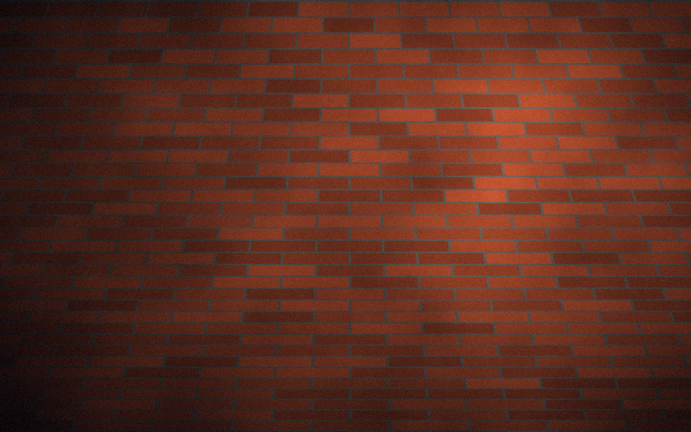
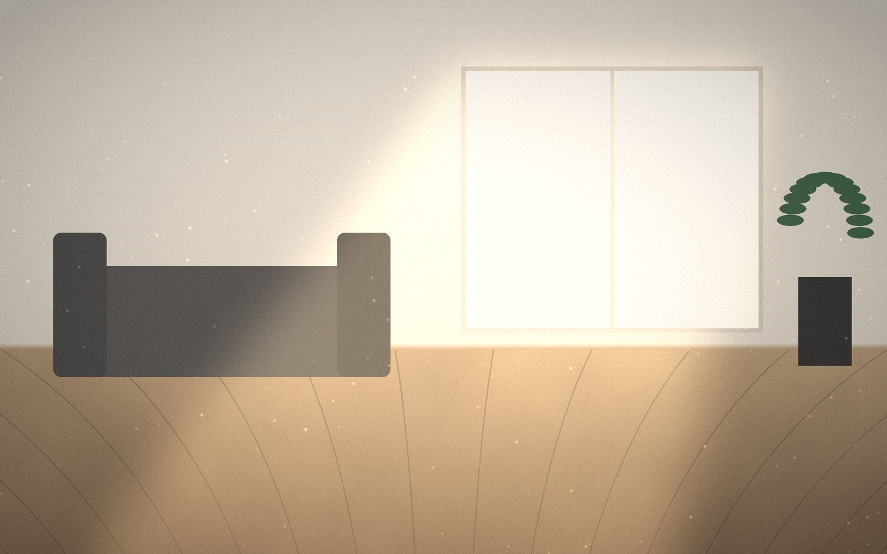
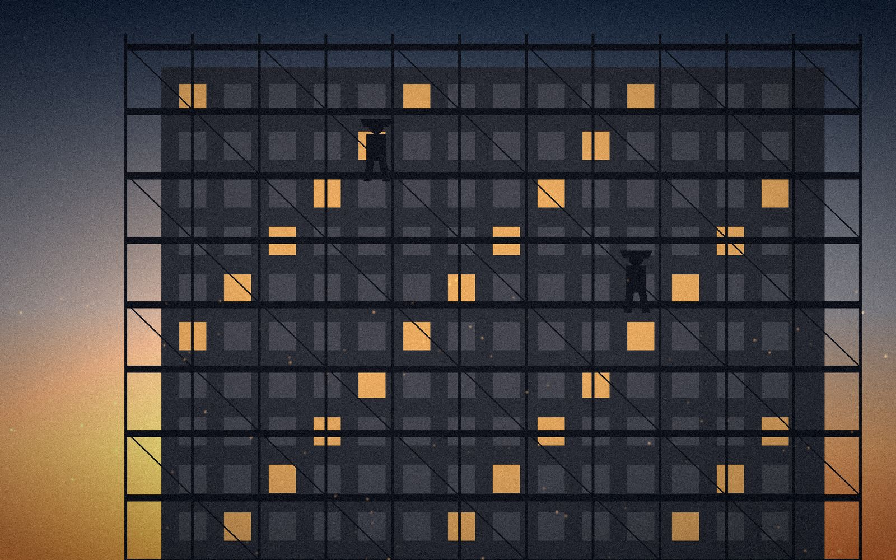
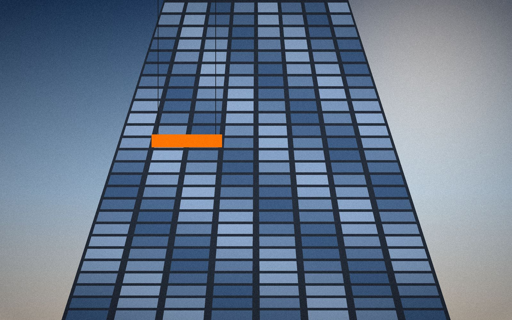

事業内容
OUR BUSINESS
「つくる」から「整える」まで。
5つの事業を一貫して手がけることで、
工程間のロスをなくし、品質とスピードを両立します。
※各事業の説明文はサンプルです。写真はイメージ（仮）です。
01 — CIVIL ENGINEERING
土木工事業
地域の暮らしを足元から支える、インフラづくり。
道路・造成・上下水道・河川・外構の基盤整備など、公共・民間を問わず幅広い土木工事を手がけます。重機による掘削・運搬から、測量に基づいた精度の高い仕上げまで、一貫した施工管理で工期と品質をお守りします。
主な対応工事
- 道路新設・舗装補修工事
- 宅地造成・土地整備
- 上下水道・排水設備工事
- 擁壁・法面工事
- 外構の基盤整備

02 — TILE / BRICK / BLOCK
タイル・レンガ・
ブロック工事業
耐久性と美しさを、ひとつずつ積み上げる。
門柱・塀・アプローチ・花壇など、住まいの印象を決める外構を中心に、タイル・レンガ・ブロックの施工を行います。下地づくりから目地の仕上げまで丁寧に施工し、長く美しさが続く仕上がりをご提案します。
主な対応工事
- ブロック塀・擁壁ブロック積み
- 門柱・門まわり工事
- レンガ花壇・アプローチ
- 外壁・床のタイル張り
- 既存ブロック塀の補修・撤去

03 — HOUSE CLEANING
ハウスクリーニング業
引き渡しの瞬間を、最高の状態で。
新築・リフォーム後の竣工クリーニングから、賃貸物件の退去後清掃、水まわりやエアコンなどの専門清掃まで対応します。建設現場を知るプロだからこそ、仕上げの品質にこだわったクリーニングをお届けします。
主な対応工事
- 新築・リフォーム後の竣工清掃
- 空室・入居前クリーニング
- キッチン・浴室など水まわり清掃
- 窓・サッシ・床のクリーニング
- 定期清掃のご相談

04 — SCAFFOLDING / CONCRETE
とび・土工・
コンクリート工事業
すべての工事の、確かな土台をつくる。
足場の組立・解体、掘削・埋戻しなどの土工事、基礎や土間のコンクリート打設まで、現場の土台となる工程を担います。安全管理を徹底し、後工程の職人さんが作業しやすい現場づくりを心がけています。
主な対応工事
- 足場の組立・解体
- 掘削・埋戻し・残土処理
- 基礎・土間コンクリート打設
- 型枠・鉄筋の補助作業
- 構造物の解体・撤去

05 — BUILDING MAINTENANCE
清掃管理業
建物の美しさと価値を、日々守り続ける。
マンション・オフィスビル・店舗・商業施設などの日常清掃・定期清掃を承ります。建物ごとに最適な清掃計画をご提案し、継続的な管理によって美観と資産価値を維持します。
主な対応工事
- 共用部の日常清掃
- 床面の定期洗浄・ワックス
- ガラス・外壁の清掃
- 駐車場・外構まわりの清掃
- 清掃計画のご提案
FLOW
ご依頼の流れ
- STEP 01
お問い合わせ
お電話またはフォームから、工事内容やご希望をお聞かせください。
- STEP 02
現地調査
現場にお伺いし、状況を確認したうえで最適な工法を検討します。
- STEP 03
お見積り・ご提案
工事内容と費用を明確にしたお見積りをご提出します。
- STEP 04
施工
安全管理を徹底し、工程に沿って丁寧に施工します。
- STEP 05
完了・お引き渡し
仕上がりをご確認いただき、お引き渡し。アフターフォローも承ります。
※ご依頼の流れはサンプルです。
CONTACT
工事のご相談・お見積りは
お気軽にどうぞ。
元請け様・協力会社様からのご依頼、個人のお客様からのご相談まで承ります。